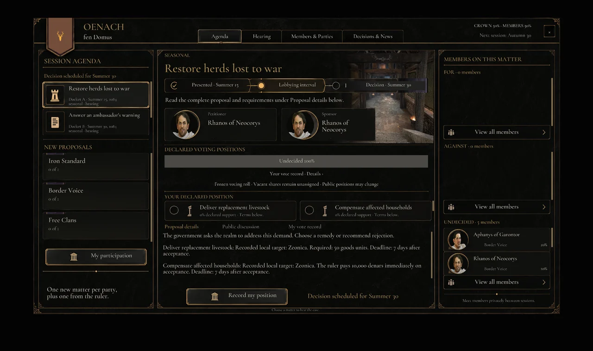
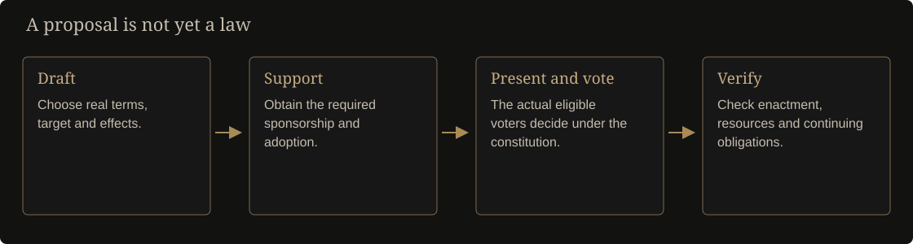

Mount & Blade II: Bannerlord · Reign
Government and political participation
Take part in your kingdom’s institutions, proposals, hearings and decisions.
Development guide · November 24, 2026 · Edition notes
Your kingdom's institution
Preview included#Government represents organized political members and constituencies alongside the ruler and noble pressures. Its parties have platforms, members, speakers, coalitions, and differing interests. Government trust is different from personal friendship or Public Standing.
| Institution | Typical representation |
|---|---|
| Imperial Senate | Town and village notable constituencies |
| Great Council of Peers | Qualifying landholding clans |
| Grand Veche | Landholding clans and town merchant/artisan constituencies |
| Oenach | Landholding clans and village headman/landowner constituencies |
| Majlis al-Shura | Landholding clans and town merchant constituencies |
| Great Kurultai | Qualifying landholding clans |
| Great Thing | Landholding clans and town/village notable constituencies |
| Council of Estates | Landholding clans and town notable constituencies |
Use Royal Court → Government for the ruler view. Castle Layout → Government also provides the supported public view; viewing it does not make you ruler. A new kingdom's Founding Charter lets the player review the institution and its starting authority. Confirming a charter is a constitutional choice, not a cosmetic culture selector. Existing kingdoms retain their recorded constitution.

Authority and the ruler's limits
Preview included#Government authority ranges from advice, through political pressure and reconsideration, to required approval for important decisions. At stronger levels the ruler may need a conscious override or a constitutional change; at the strongest level major actions can be blocked until approval is obtained.
War, peace, treaties, policy, taxation, major spending, fiefs, and serious justice can fall within that authority. A valid military or diplomatic action is not permission to bypass Government. Relief and espionage have different classifications, but parties can still care about them.
Increasing authority gives the institution a stronger role and brings public benefits. Reducing it through agreement differs sharply from forcing it down. Forced reduction can damage trust and relationships across the realm. An NPC's explicit consent protects only the person or clan they can actually represent, for the exact proposed change; it is not a permanent blank cheque.
Joining Government without a crown
Preview included#You can read public records, prepare proposals, approach members, and seek support before holding a seat. Admission depends on the institution. A noble seat needs actual qualifying clan leadership and land. A civic mandate needs an eligible constituency, endorsements, and the supported adoption and decision process.
If a seat is occupied, its holder does not lose it merely because you ask. Transfer consent or a lawful recall route may be required. Political sponsorship cannot invent an extra seat, give you someone else's vote, or make you a vassal by implication.
A member can vote, support proposals, join political work, and seek party responsibility. Membership does not grant treasury access, military command, or a Royal Council seat. A title such as Senator describes a real recorded office, not permission to direct the kingdom.
Proposals, sponsors, parties, and sessions
Preview included#Use Prepare a proposal and My Proposals where available. Choose the real kingdom, action or policy, target, and enactment or repeal terms. A draft is not a law. Changing its terms can require renewed support.
In a supported conversation, Alt+A opens the action selector for political requests and the proposal route. Escape returns from the Government screen; inside the action builder it cancels that builder instead.
Seek an eligible sponsor or party adoption. A willing member's personal support, a party's nomination, formal presentation, a vote, and actual enactment are separate stages. Speakers coordinate party work; they cannot turn their personal opinion into every member's ballot. An unused or unsupported nomination can expire rather than silently becoming law.
Seats and future voting shares follow actual constituencies and territorial changes. A new holding can add representation; losing one can suspend it. Existing matters preserve their recorded voter roll rather than handing an absent member's vote to a newcomer. Crown and member weight also depend on the constitution, so do not assume every decision is a simple equal headcount.

Hearings, recess, and political bargains
Preview included#Public hearing speech enters the record but does not by itself spend gold, enact a policy, change a ballot, or create a private deal. Check attendance: absent members are not silently present in the conversation.
For persuasion or a political bargain, speak with the actual available member in the supported individual conversation, including during a recess. There are no magical hearing buttons that guarantee a bought vote. Any accepted payment needs clear mutual terms, actual funds, and the right recipient. A deal depends on the promised obligation really being fulfilled.
Political promises affect consideration; they do not guarantee every final vote. Read the recorded position and outcome. Changing your mind, missing a deadline, or failing an obligation can have consequences even if the original conversation sounded friendly.
Resolutions, edicts, and follow-through
Preview included#Government business spans relief, food and agriculture, trade, security, defence, war and peace, raids, espionage, diplomacy, justice, construction, prisoners and households, and taxes or obligations. An edict or policy can benefit one area while burdening another.
Read the current target, completion route, deadline, and tradeoffs. Paying money is not always the same as supplying goods or improving an actual settlement condition. A promising speech does not complete a resolution; check the requirement and whether the game recorded it as fulfilled.
For a construction obligation, verify the named project and deadline before accepting. Watch for the game's completed-project result while that resolution is active. Paying into a reserve or leaving the project queued can help the work along, but fulfillment requires the correct project to finish by the deadline.